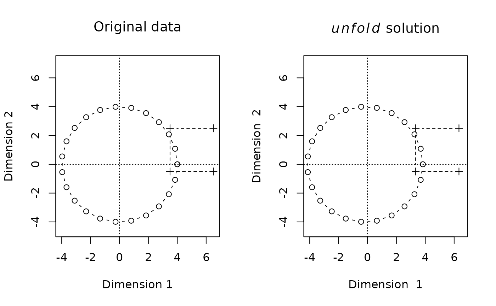

metricUnfolding.Rdunfold computes a metric unfolding solution
based on a rectangular matrix, that is, reconstructs
two sets of points from the distances between points
of the first set and the points of the second set.
uapply applies a function
the two point sets that are reconstructed by unfold.
unfold(x,...)
# S3 method for matrix
unfold(x, ndims=NULL, squared=FALSE, tol=1e-7,
method=c("Schoenemann", "CG"), ...)
# S3 method for formula
unfold(x,data=parent.frame(), ...)
# S3 method for unfolding
biplot(x, dimen=c(1,2), type=attr(x,"biplot_type"),
xlim, ylim, tpos=c(4,2), tposdim=1,
asp=1, lty=c(1,2), lwd=c(1,1), pch=c(1,3), cex=c(1,1),
col=c("black","black"), contour.col="black", contour.lty=1,
xlab=paste("Dimension ",dimen[1]),
ylab=paste("Dimension ",dimen[2]),
...)
# S3 method for unfolding
plot(x, y=NULL ,dimen=1, discrete=attr(x,"plot_discrete"),
use.rownames=discrete, xlab=paste("Dimension ",dimen), ...)
uapply(x,FUN)for unfold.matrix: a rectangular matrix that contains distances
or squared distances (if argument squared is TRUE).
For unfold.formula: a formula which specifies the variables
that form the columns of the matrix of distances.
For biplot.unfolding and plot.unfolding: an object that contains an unfolding solution.
a data frame or an environment that contains variables specified in the formula given as first argument.
an optional integer value that specifies the
dimensionality of the solution. If NULL the
dimensionality is selected automatically based
on a singular value decomposition of the matrix
of squared distances.
a logical value; does the matrix D contain squared distances?
a tolerance value for the convergence of the conjugate gradients method.
a method for the iterative computation of the unfolding solution.
a dummy argument for compatibility with default methods, ignored.
for biplot: a two-element integer vector,
for plot: a single integer value, that specifies
the dimension(s) of the unfolding solution to be plotted.
a character vector of length less then or equal to 2. Determines how each of the two point sets of the unfolding solutions are represented in the biplot. Valid choices are
"points"the respective set of points are plotted as points in the biplot.
"lines"the points of the respective set are connected by lines.
"both"the points of the respective set are plotted as points and connected by lines.
"text"the points of the respective set
are represented by the corresponding row names
and, if argument tpos is present,
by points.
"density"contour lines are drawn of
two-dimensional kernel density estimate for the
respective set of points.
This biplot type
uses the function kde2d
of library MASS.
a two-element integer vector; specifies
the position of text labels relative
to the points. For the meaning of these integer values
see text
an integer value; specifies which how elements of tpos
are used. Labels of points with negative positions along coordinate axis
dimen[tposdim] are positioned according to tpos[1],
labels of other points are positioned according to tpos[1].
arguments passed to base graphics functions
.
colour and line type for contour lines,
see contour.
a logical vector of lenght 2;
if TRUE, the respective set of points are represented
by spikes in theplot, otherwise the set is represented
by a graph of a kernel density estimate.
logical; should row names used for annotation?
further arguments passed to optim in
case of unfold or points
in case of the plotting methods.
a function applied to the two sets of points that result from the unfolding.
unfold first computes an unfolding solution according to
Schoenemanns metric unfolding algorithm that uses only
linear algebra operations. This preliminary solution is
then refined by minimizing the stress using a conjugate-gradients
method.
uapply applies a given function to the two sets of points
recovered by an unfolding solution. It applies the function
to the components A and B of an object
of class "unfolding".
unfold returns an object of class "unfolding"
with components
a numeric matrix representing the first set of points. Each row contains the coordinate of one point of the first set.
a numeric matrix representing the second set of points. Each row contains the coordinate of one point of the second set.
a numeric matrix that contains the fitted squared distances.
A stress value, denotes the "badness of fit".
r <- seq(from=0,to=2*pi,length=24)
a1 <- cos(r)*4 + 0.00001*rnorm(r)
a2 <- sin(r)*4 + 0.00001*rnorm(r)
b1 <- c(.5,-.5,-.5,.5)*3 + 5
b2 <- c(.5,.5,-.5,-.5)*3 + 1
D1 <- outer(b1,a1,"-")
D2 <- outer(b2,a2,"-")
Dsq <- D1^2+D2^2
Dsq.uf<-unfold(sqrt(Dsq),squared=FALSE)
oldpar <- par(mfrow=c(1,2))
A <- cbind(a1,a2)
B <- cbind(b1,b2)
ltype <- c(rep(1,NROW(A)),rep(2,NROW(A)))
orig <- rbind(A,B)
unfolded <- rbind(Dsq.uf$A,Dsq.uf$B)
xlim <- ylim <- range(orig)#*1.5
plot(A,type="b",pch=1,
xlim=xlim,ylim=ylim,
xlab="Dimension 1",ylab="Dimension 2",main=expression("Original data"),asp=1)
lines(B,type="b",pch=3,lty=2)
abline(h=0,v=0,lty=3)
biplot(Dsq.uf,type="b",
xlim=xlim,ylim=ylim,
main=expression(paste(italic(unfold)," solution")),asp=1)

par(oldpar)